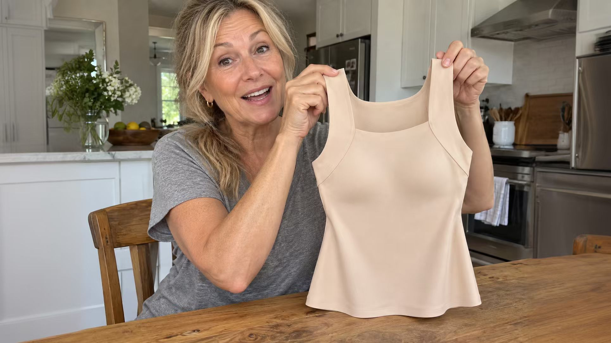

Kényelem és magabiztosság mindennap
7 ok, amiért több mint 25 000 ötven év feletti nő lecserélte a melltartóját erre a trikóra

Összefoglaló: Az ötven év feletti nők jól tudják, hogy a kényelemért nem kell lemondani a csinos megjelenésről. Ez a sima, beépített tartással rendelkező trikó két ruharéteget egyesít, és természetesebb sziluettet ad merevítő, vékony pántok és bevágó mellpánt nélkül.

✨ Három barátnőm kérdezte, hogy lefogytam-e
1. A blúzaim végre úgy állnak, ahogy kell
A hiú okkal kezdem, mert ezt vettem észre először.
Az első napon felvettem a trikót egy vékony pulóver alá, és oldalról megnéztem magam. Egyetlen sima vonal futott a bordáimtól a csípőmig. Nem rajzolódott ki a melltartópánt, és a vállpántok sem látszottak a fényképeken.
Kisebb vagyont költöttem alakformáló ruhákra és bodykra. A legtöbb annyira szorított, hogy számoltam az órákat, mikor vehetem le, az eredmény pedig alig látszott.

🚫 Évekig ok nélkül hibáztattam a testemet
2. Amit „háti zsírnak” hittem, sosem zsír volt
Bárcsak valaki elmondta volna ezt 45 éves koromban. A hónalj alatti és háti dudor gyakran nem a súly miatt van. A keskeny, szoros mellpánt felfelé és oldalra nyomja a puha bőrt.
Ha eltűnik a mellpánt, eltűnik a dudor is. Ugyanaz a test, ugyanaz a súly, ugyanaz a nap. Évekig kerültem a hátulról készült képeket valami miatt, ami nem a testem hibája volt.

💪 Igen, még 90E méretnél is
3. 90E méretet hordok, és ez a trikó jobban tart, mint bármely merevítős melltartó
Egyszerű fizika. A hagyományos melltartó három ponton tartja a mellek teljes súlyát: két vékony vállpánton és egy mellpánton. Minél teltebb a mell, annál mélyebben vágnak be ezek a pontok.
Ennél a trikónál az egész ruhadarab tart. A súly egyenletesen oszlik el, egyik pont sem visel mindent, és semmi nem hagy nyomot.
Sétával, lépcsőzéssel és az unokám felemelésével teszteltem. Semmi nem ugrált vagy türemkedett ki, és ebéd után sem szorított a bordáimnál.

📏 Négy mérés, négy különböző méret
4. Nincs több találgatás a melltartóméretekkel
A vizsgálatok újra és újra azt mutatják, hogy a legtöbb nő rossz méretet hord. Az évek során számtalanszor megmértek, és minden alkalommal más mérettel távoztam.
Itt nincs körméret és kosárbetű. Indulj ki abból a méretből, amelyet pólóból hordasz, és nézd meg a táblázatot: XS, S, M, L vagy XL. Ez egyszerű ruhaméret, nem a tested minősítése.

😴 Még a kanapén is elaludtam benne
5. Már nem számolom vissza az órákat hazáig
Délután három körül kezdődött a kényelmetlenség: lecsúszó pántok, szúró merevítő és bevágó mellpánt. Gondolatban már otthon voltam, és kikapcsoltam a melltartómat.
Ebben a trikóban úgy telik el a délután, hogy eszembe sem jut. Nincs kapocs, nincs merevítő, és étkezés után sem kell igazgatni. Kétszer elaludtam benne a kanapén, és csak lefekvéskor vettem észre.

☀️ Az első nyaram szenvedés nélkül
6. Lehet, hogy a szoros mellpánt miatt tartasz a nyártól
Képzelj el egy keskeny gumicsíkot, amely tizenkét órán át szorosan körbefogja a bordáidat. Evés után még szorosabb, este pedig nedves, piros csíkot hagy a bőrön.
Ha könnyen meleged van, és a nyár olyan évszakká vált, amitől tartasz, a kellemetlenség egy részét talán a melltartó mellpántja okozza, nem te.
Itt nincs szoros mellpánt. Semmi nem szorítja egész nap a mellkasodat.

💛 81 éves, és újra egyedül öltözik
7. A 81 éves édesanyám ismét egyedül öltözik
Anyám látogatásakor felfigyeltem valamire, amiről ritkán beszélünk: az otthonban sok nő már nem visel melltartót. Nem saját döntésből. A háton lévő kapcsok becsatolása az életkorral egyre nehezebb, segítséget kérni pedig túl személyes.
Ezt a trikót egyszerűen át kell húzni a fejen. Nincs kapocs, nincs horog, és nem kell hátracsavarni a karokat.
Anyám 81 éves. Minden reggel újra egyedül öltözik, és azt mondta, hosszú idő óta először érzi magát rendezettnek. Ez az igazi oka annak, hogy megírtam ezt a cikket.

💬 Több mint 25 000 nő – és egyre többen
8. Valódi vásárlói tapasztalatok
Rendelés előtt valószínűleg ugyanazt tettem, amit most te: rákerestem a márkára, elolvastam a véleményeket, és valódi vásárlói fotókat kerestem. Ezt a trikót már több mint 25 000 nő vásárolta meg.
Különleges ajánlat
Ellenőrizd az aktuális árat, színeket és méreteket, amíg a termék készleten van.
Ár és elérhetőség ellenőrzése 👉